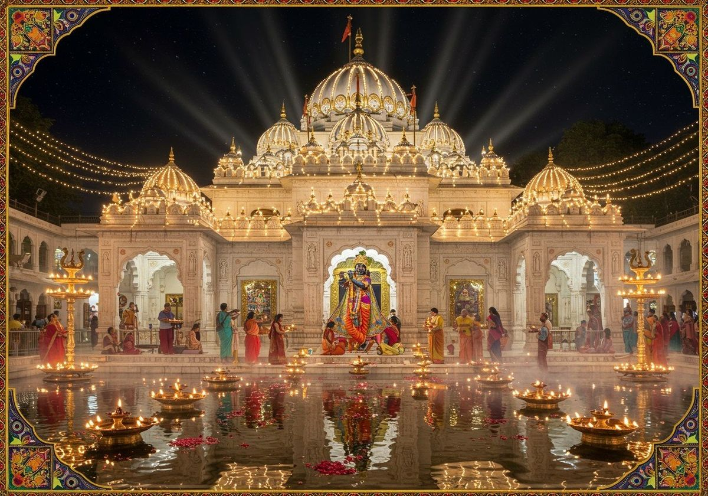
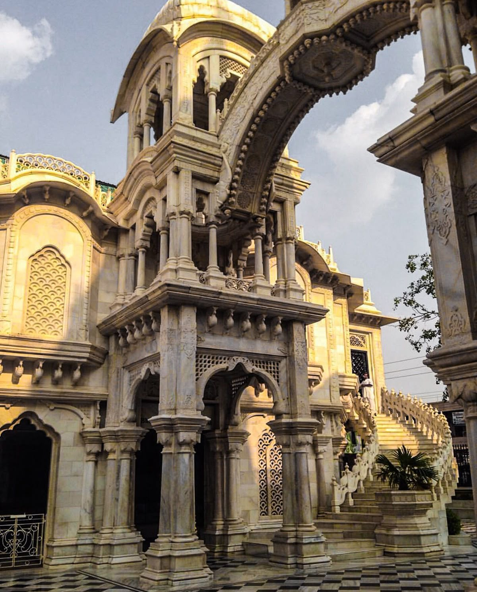
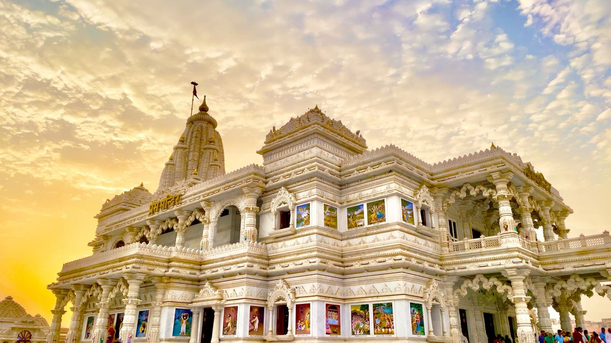
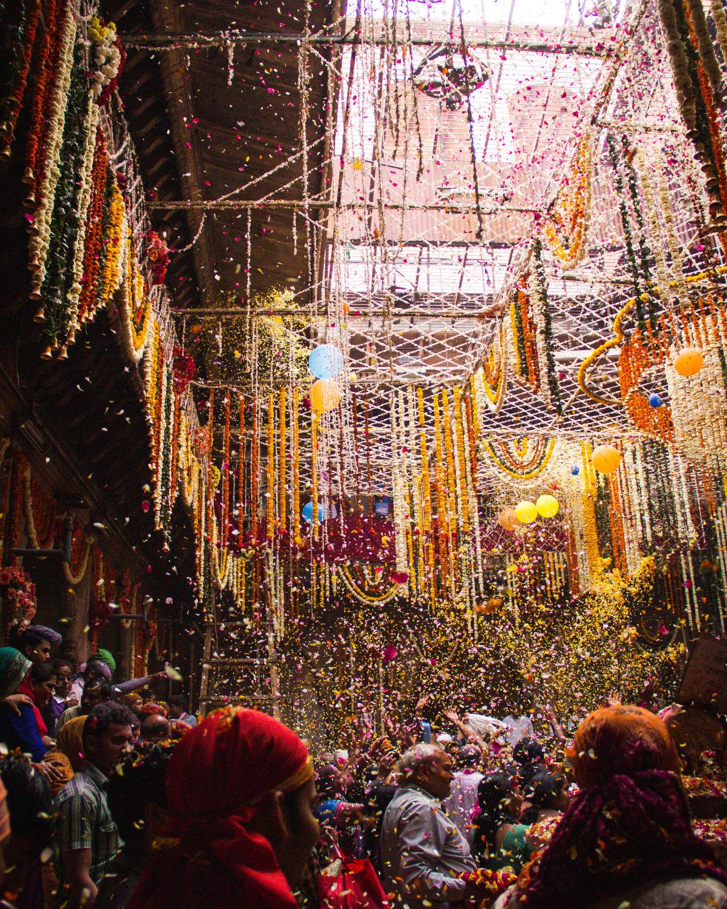
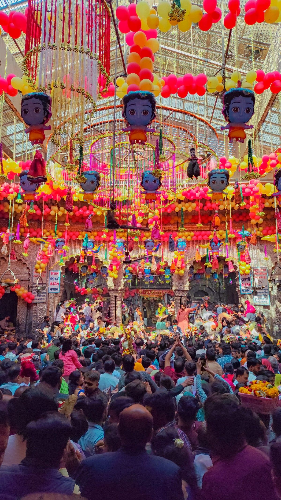

Vrindavan also pronounced Vrindaban and Brindaban, is a historical city in the Mathura district of Uttar
Pradesh, India. It is located in the Braj Bhoomi region and holds religious importance for Hindus, who
believe that Krishna, one of the main Gods in Hinduism, spent most of his childhood in this city.Vrindavan
has about 5,500 temples dedicated to the worship of Krishna and his chief consort, Radha. It is one of the
most sacred places for Vaishnava traditions.Vrindavan forms a part of the "Krishna pilgrimage circuit" under
development by the Indian Ministry of Tourism.
In the last 250 years, the extensive forests of Vrindavan have been subjected to urbanisation, first by
local Rajas and in recent decades by apartment developers. The forest cover has been whittled away to only a
few remaining spots, and the local wildlife, including peacocks, cows, monkeys and a variety of bird species
has been virtually eliminated.Vrindavan, a sacred town in Uttar Pradesh, India, is known as Lord Krishna's
childhood home, teeming with hundreds of temples (like Banke Bihari, ISKCON) along the Yamuna River,
attracting Hindu devotees for its spiritual significance, especially in Vaishnavism, and vibrant culture
featuring mystical sites like Nidhivan where divine Raas Leela is believed to occur nightly.Vrindavan Dham
is situated in Mathura district in Uttar Pradesh a state of India, it is such a religious and holy place of
the Hindu religion where Lord Shri Krishna spent most of his childhood days here, whose city is also known
as the land of Shri Krishna and Radha Rani. There are about 5500 temples of Shri Krishna and Radha Mata in
Vrindavan.
Every year lakhs of devotees who worship Shri Krishna as their God come here to have darshan. Especially in
the auspicious festival of Janmashtami, a crowd of devotees is formed here.
It is said that Lord Shri Krishna was very mischievous and quick-tempered in his childhood in Vrindavan, be
it the story of stealing butter or getting his friends to cross the river Yamuna, his innocence was
reflected in all.
Although Krishna was born in Mathura, which is also a popular pilgrimage & holy place in Uttar Pradesh, his
childhood was spent in Gokul, Vrindavan, Nandgaon, and Barsana. The city is also home to the ISKCON temple,
the largest temple in the world.
There are many famous temples in Vrindavan city, including ISKCON, Shri Krishna Balram, Shri Radha Raman
Temple, Shri Radha Gopinath Temple, Gokulnath Temple, etc.
There are beautiful gardens, parks, etc. which add to the beauty of this Dham. Beautiful idols of Shri
Krishna and Radha Rani remain the center of attraction here.
Devotees of Krishna from all over the country and abroad come here to read spiritual books, bhajan kirtan,
and devotional songs. There are holy places that one must visit once and enjoy the devotion and beauty of
the Dham to the fullest.
Vrindavan is approx 15 km away from Mathura. It will take approx 25 to 30 minutes to reach.
Places to visit
Banke bihari temple

Banke Bihari Temple is one of the most revered temples in Vrindavan, dedicated to Lord Krishna.
The idol of Banke Bihari Ji is believed to be self-manifested and represents Krishna in a
playful child form. The temple is famous for its unique darshan style, where the curtain is
drawn every few minutes to protect devotees from Krishna’s intense divine gaze. Thousands of
devotees visit the temple daily, especially during Janmashtami and Holi, making it a major
spiritual attraction in Vrindavan.
Iscon temple

The ISKCON Temple in Vrindavan, also known as the Krishna Balaram
Mandir, is one of the most
serene and well-known temples in the city. . The temple is dedicated to Lord Krishna and Lord
Balaram,
along with Radha-Shyamasundar. Known for its peaceful atmosphere, beautiful architecture, and
soulful bhajans and kirtans, the temple attracts devotees from India and all over the world. It
is a perfect place for meditation, devotion, and spiritual learning.
Prem Mandir

Prem Mandir is a magnificent white marble temple built by Jagadguru Kripalu Maharaj. It is
dedicated to Radha–Krishna and Sita–Ram and is famous for its stunning architecture and carvings
depicting scenes from Krishna’s life. The temple looks especially beautiful at night when it is
illuminated with colorful lights.
The temple is famous for its beautiful carvings, statues, and evening light show.
It beautifully represents the message of love, devotion, and spirituality.
Best Time to Visit
🌸 October – March
The best time to visit Vrindavan. The weather is pleasant and ideal
for temple visits, sightseeing, and festivals.
🔥 April – June
Summers are very hot and humid. Not recommended for daytime travel,
but early mornings and evenings are manageable.
🌧️ July – September
Monsoon brings greenery and a peaceful atmosphere, but humidity
and rain can affect travel plans.
Festivals in Vrindavan

Janmashtami
Celebrates the birth of Lord Krishna with grand devotion and festivities.

Holi (Phoolon ki Holi)
Famous for flower Holi and colorful celebrations in temples.

Radhastami
Celebration of Radha Rani’s appearance with special temple rituals.
Tips for visitors
🏨 Accommodation Tip
Stay near major temples like Banke Bihari or ISKCON for easy access.
🍲 Food & Prasad
Try satvik food and temple prasad
Avoid street food if you have a sensitive stomach
🙏 Dress Modestly
Vrindavan is a holy town. Wear decent and comfortable clothes, especially while visiting
temples. Avoid shorts and sleeveless outfits inside temple premises.
🕰️ Best Time for Darshan
Temples can get very crowded.
Visit early morning or late evening for peaceful darshan
Avoid peak hours on weekends and festival days if you want less crowd
👟 Footwear & Belongings
Most temples do not allow footwear, bags, or mobile phones inside
Carry a small pouch and be cautious of your belongings
🧘 Respect Local Customs
Maintain silence inside temples
Follow temple rules and instructions
Photography may be restricted in some places
🌸 Festival Visits
Festivals like Janmashtami and Holi are magical but extremely crowded.
Book accommodation in advance
Be prepared for long queues and heavy rush
🚕 Local Transport
Auto-rickshaws and e-rickshaws are easily available
Walking is often the best way to explore nearby temples
💧 Stay Hydrated
Weather can get hot.
Carry water bottles
Summer visits require extra care